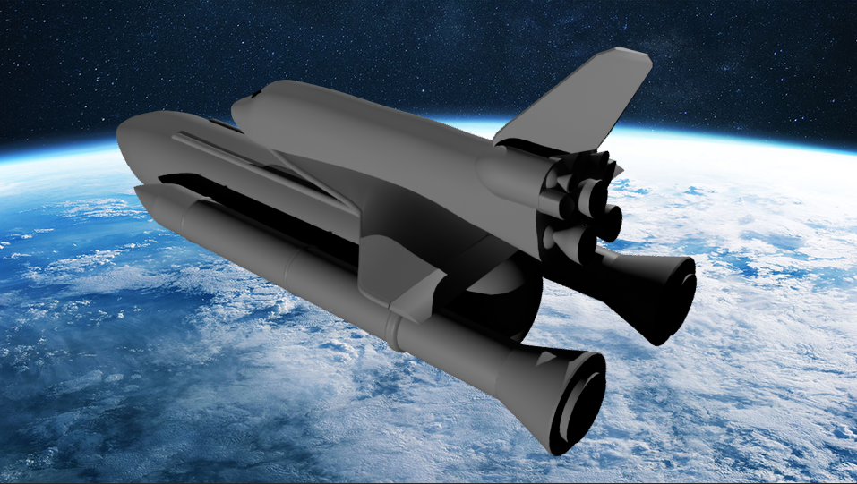
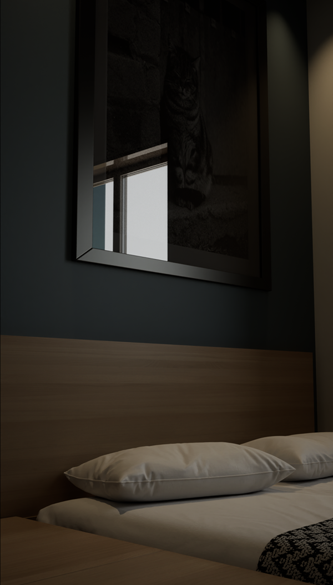
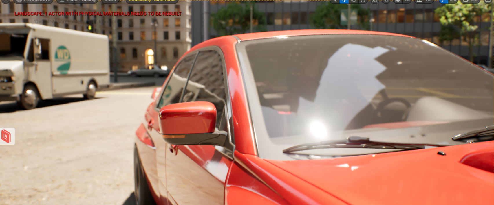
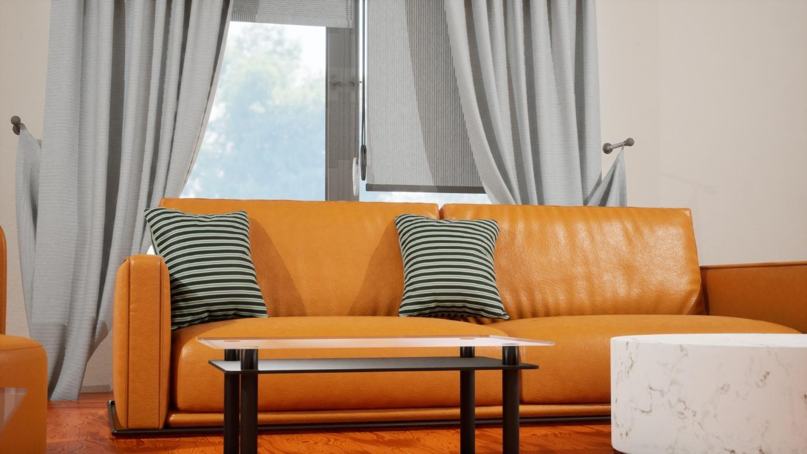
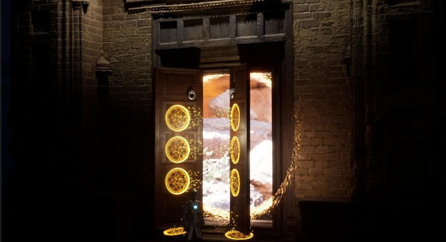

Projects that sit between the game engine and the camera.
Hard-surface modeling, real-time environments, broadcast virtual production, and a couple of projects that were really just excuses to chase good lighting.

01 / Broadcast
Disney+ Hotstar — Shoorveer
Cinematography and virtual production for India's first television show shot in Unreal Engine, including LED-volume cockpit sequences.

02 / Personal
Unreal Environments
A collection of lighting-first studies: a Baby Driver recreation, a Mughal-architecture dreamscape, a horror set piece, and more.

03 / Hard-surface
3D Modeling an Aircraft
An F-22 Raptor poly-modeled in Maya from orthographic blueprints, textured in Substance Painter, rendered over real terrain in UE5.

04 / Hard-surface
NURBs Space Shuttle Vehicle Modeling
The STS Launch Vehicle built with NURBs surfacing in Maya from NASA references, completed in a two-week sprint.

05 / ArchViz
ArchViz — Ancestral Home
A 3D reconstruction of my family's home from an architect's floor plan, rebuilt and set-dressed in Blender and Unreal.

06 / Stills
Static Cinematic Shots
Stills pulled from personal Unreal Engine 5 environment work, framed to study lighting and camera placement.

07 / Materials
Manufactured Materials
Six manufactured materials authored new-and-worn — a full pipeline from Substance Designer through Painter to Unreal Engine.

08 / Playable
Playable UE5 Environment
A playable level built around one interactive centerpiece — a Blender-modeled magic door, animated in Sequencer as a real gameplay transition.